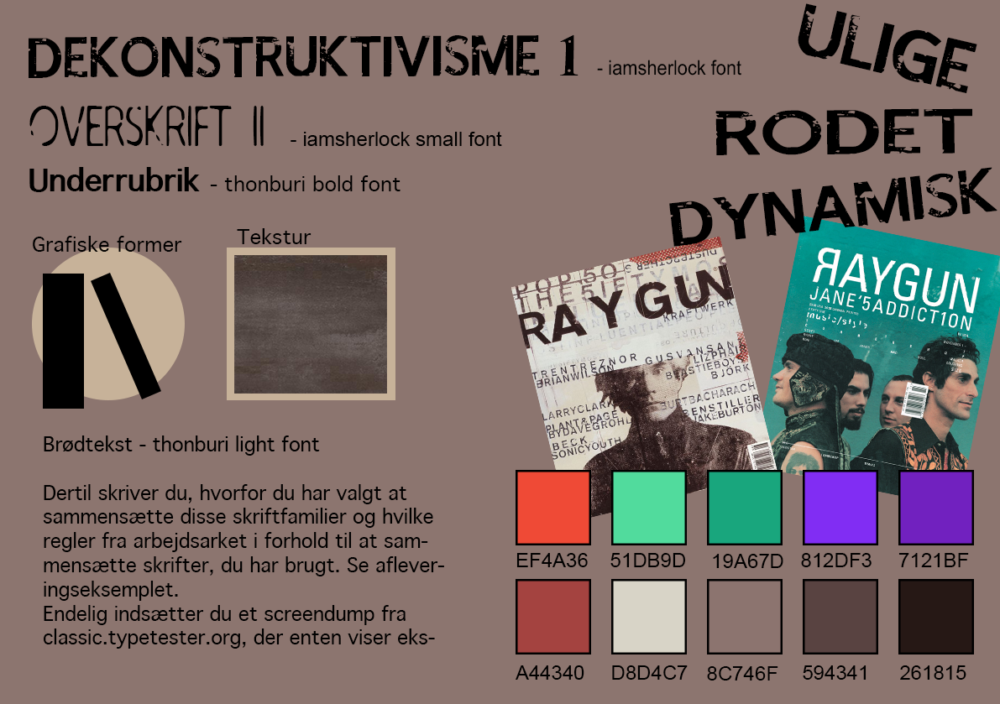

GRUNDLÆGGENDE HTML

Ikon til stilartsite i forskellige størrelser
Styletile til stilartsite
Denne opgave var det første på uddannelsen. I opgaven skulle vi kode et responsivt hjemmeside med HTML og CSS fra bunden udfra en bestemt stilart. Stilarten som jeg fik tildelt var dekonstruktivismen. På hjemmesiden kan man læse om stilarten, eksempler på kunstnere samt karakteristiske træk for typografi, komposition og farver.